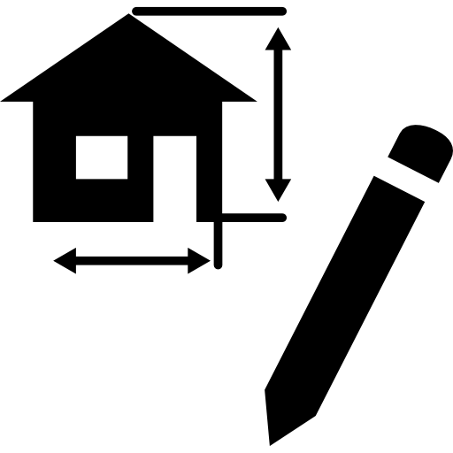

¿Quien soy?
Soy Juan una persona apasionada por la tecnología y el desarrollo web, siempre en búsqueda de nuevos conocimientos y retos que me permitan crecer profesionalmente. Me caracterizo por mi dedicación y creatividad a la hora de resolver problemas.
Leer más"El código es como el humor: si tienes que explicarlo, es malo.",Desarrollador enfocado en escribir código que no solo funcione, sino que perdure en el tiempo. Mi objetivo es resolver desafíos técnicos optimizando cada proceso mediante lógica y creatividad. Siempre en constante aprendizaje para dominar las herramientas que definirán el futuro digital.
- Juan Murillo
Mis proyectos

Proyecto 1
Desarrollo de una interfaz urbana detallada utilizando exclusivamente CSS puro y HTML estructural. En este proyecto se aplicaron conceptos avanzados de variables de CSS para gestionar paletas de colores dinámicas. También se trabajó a fondo con el modelo de cajas y posicionamiento para dar vida a edificios con sombras y gradientes. El resultado es un ejemplo sólido de cómo crear arte digital mediante código limpio y semántico.
Ver proyecto
Proyecto 2
Exploración profunda sobre el uso de la luz y el color mediante la creación de marcadores realistas con CSS. Se implementaron gradientes lineales y radiales complejos para simular texturas de plástico y efectos de profundidad tridimensional. El enfoque principal fue dominar la propiedad de sombras (box-shadow) para lograr un acabado visual pulido y moderno. Es una muestra práctica de precisión estética y manejo de selectores.
Ver proyecto
Proyecto 3
Diseño y maquetación de un piano funcional enfocado en la armonía visual y el uso inteligente de Flexbox. Este proyecto permitió practicar el manejo de proporciones relativas y la alineación precisa de elementos interactivos en el navegador. Se utilizaron pseudo-clases para simular la respuesta táctil de las teclas, mejorando significativamente la experiencia del usuario. Representa un equilibrio perfecto entre estructura 🎹
Ver proyectoProyecto 4
Creación de una ilustración vectorial mediante código utilizando técnicas de dibujo con bordes y formas geométricas. Este desafío técnico se centró en el uso creativo de border-radius y transformaciones para construir facciones animales con precisión milimétrica. Se reforzó el conocimiento sobre el apilamiento de capas (z-index) para organizar los componentes visuales de manera coherente.
Ver proyecto